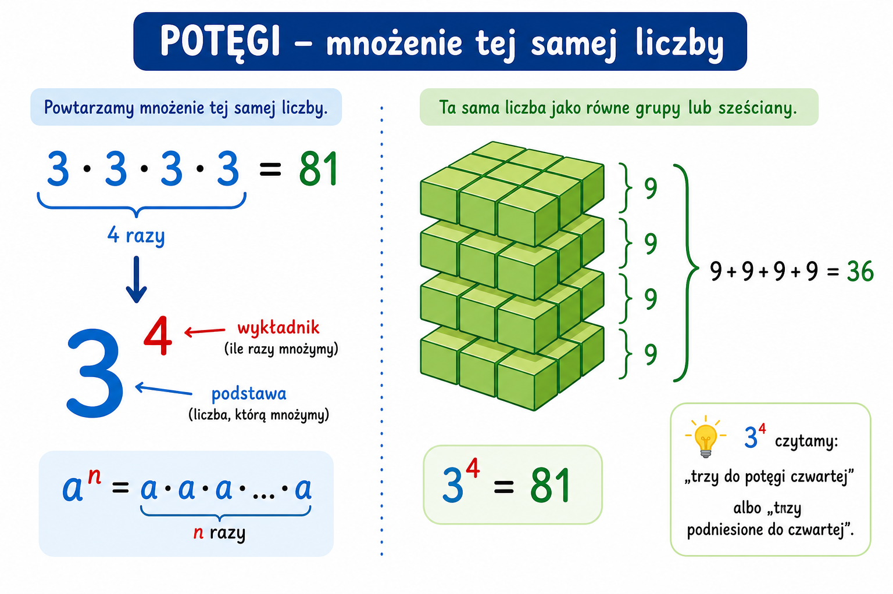

1
potęga
степінь

📘 Co to jest? Що це?
Potęga to skrót zapisu: ta sama liczba mnożona przez siebie kilka razy.
Степінь — скорочений запис: те саме число множиться само на себе кілька разів.
⭐ Zapamiętaj Запам'ятай
2³ = 2×2×2 = 8
У 2³ основа — 2, показник 3: 2×2×2=8. Не плутай із 2×3=6!
⚠ Nie pomyl Не плутай
- 2³ = 2·2·2podstawa i wykładnik
- mnożenie zwykłe 2×3wykładnik = ile razy
✅ Przykłady Приклади
- 2⁴ = 16
- 3³ = 27
- 10² = 100
- 5⁰ = 1
- 2·2·2 = 2³